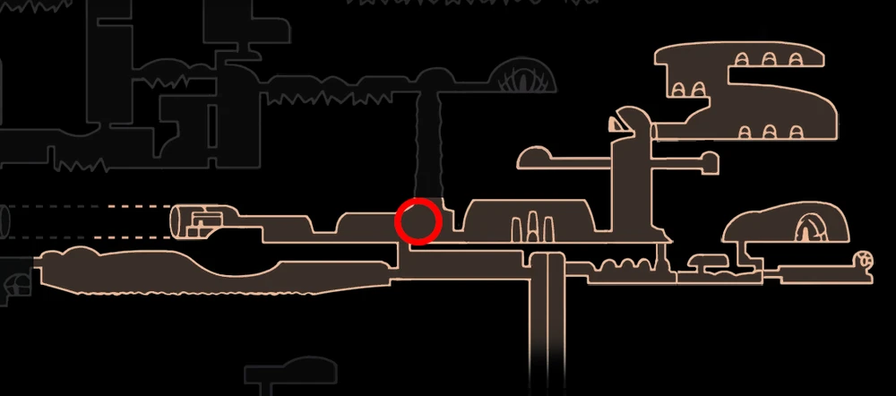

XERO
 Boss In Action
Boss In Action  Browse More Bosses
Browse More Bosses
Xero can be found in the lower part of the Resting Grounds, to the left of the Dreamer Statues.
Xero was a strong and proud warrior of Hallownest who believed strength would allow him hope, freedom and anything else he wanted. In his dreams, he would "cut that plague with his nails", most likely meaning he was able to fight off the infection and the light when he was dreaming, however he was still infected. Xero believed that he could fight against the infection with violence and his strength. Fueled by these ideas, he turned his weapons against Hallownest and the Pale King, which ultimately ended in his execution. His body, along with other traitors of the king, were placed in the Resting Grounds, their tombs a warning to anyone who would want to betray the Pale King. When the Knight talks to Xero, he is still under the impression that his actions were right and justifiable, and blamed his demise on cruel fate, and saying all those who hope against the infection are doomed to the same fate as him. After being defeated, Xero realises what he did wrong. He asks the knight not to call him a traitor, simply to call him a fool, and that wherever the Knight goes, he will be watching.
Health:
200/320/416/500/570
Scaling with Nail Upgrades 0/1/2/3/4 respectively.
Moves: